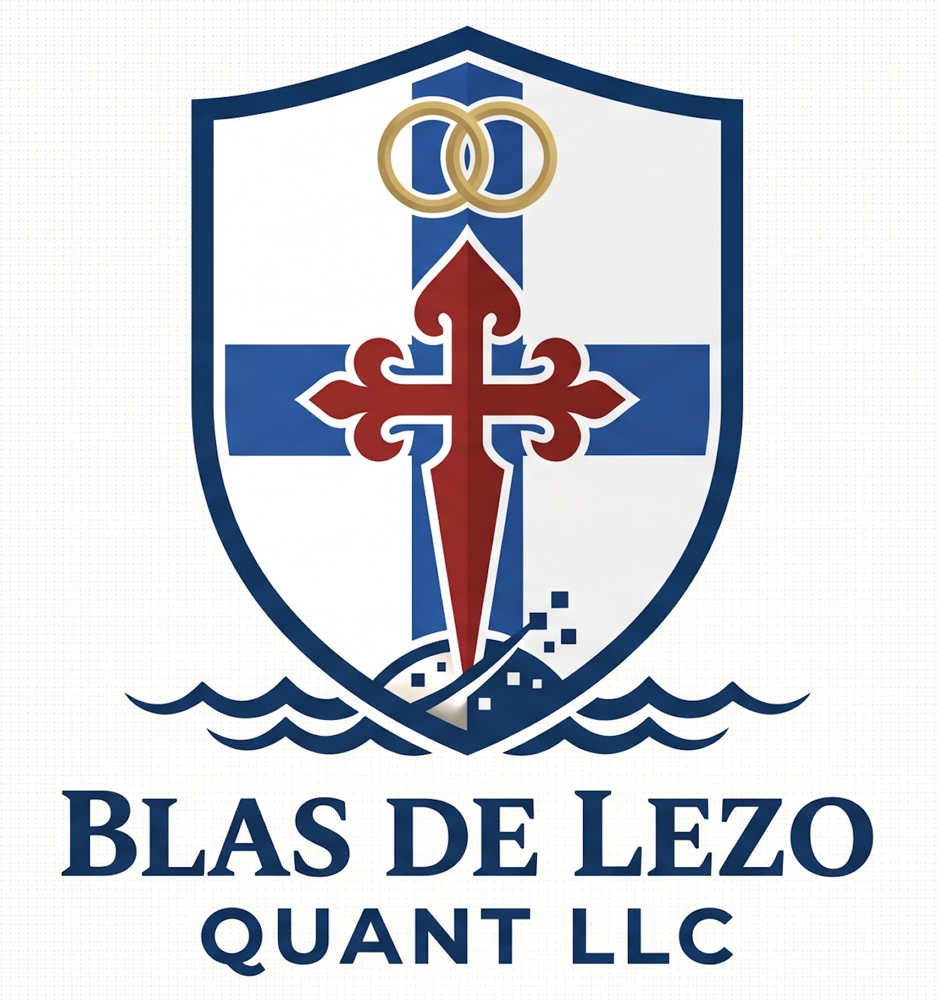

"The world does not exist in a state of permanent equilibrium. Legacy models fail because they assume static harmony. We build for the fractures."
Blas de Lezo Quant LLC is a premier proprietary intellectual property (IP) house and strategic advisory firm operating at the intersection of non-linear dynamics, advanced computational neuroscience, and adaptive economic frameworks. We do not participate in legacy institutional constraints; we design, engineer, and license autonomous software architectures and core mathematical assets designed to navigate, model, and capitalize on systemic instability.
We monetize our high-horizon research lines through exclusive corporate IP licensing structures and mathematically rigorous architectural consulting services.
The firm capitalizes on its research and monetizes its ecosystem across three highly synchronized operational pipelines:
We operate in an era of simultaneous macro-evolution where the global capital system is transitioning away from static frameworks toward fluid, digital asset infrastructure. In this hyper-accelerated landscape, traditional linear predictive models fail because they assume permanent equilibrium.
The Blas de Lezo Quantitative Model is deployed exclusively as a proprietary software core available for institutional licensing. Moving completely away from rigid historical back-fitting, our framework treats market liquidity and asset pricing as an open, dynamic network.
For a comprehensive analysis of our non-linear dynamics framework, code core availability, and IP licensing tiers, our distributed briefing is available for institutional review:
[Download Technical Framework & Licensing Guide (PDF)]We do not provide standard, off-the-shelf IT support or generic corporate training. Our intervention line offers elite, mathematically rigorous tactical consulting services for enterprises encountering complex, non-linear structural challenges, while simultaneously licensing scalable educational IP to a new generation of technical leaders.
Our research division acts as the primary upstream pipeline for the generation of future intellectual property. By exploring structural invariants, we engineer advanced frameworks that scale seamlessly from terrestrial complexities to the extreme variables of future multi-planetary expansion, creating a continuous pipeline of patent-ready architectures, core software libraries, and proprietary methodologies available for strategic commercial licensing.
We believe that true mathematical genius and sovereign execution thrive outside the constraints of legacy frameworks. Whether licensing core quantitative software engines, delivering elite structural consulting, or pioneering the IP of tomorrow, Blas de Lezo Quant LLC operates on a singular principle: Uncompromising, high-frequency autonomy.